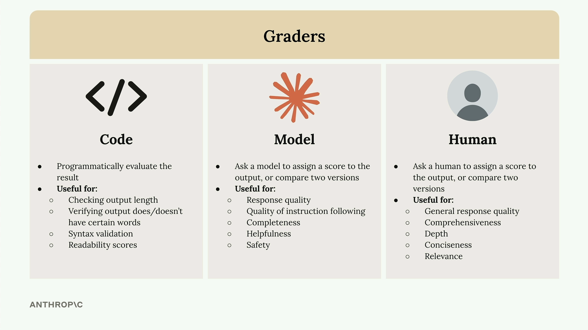
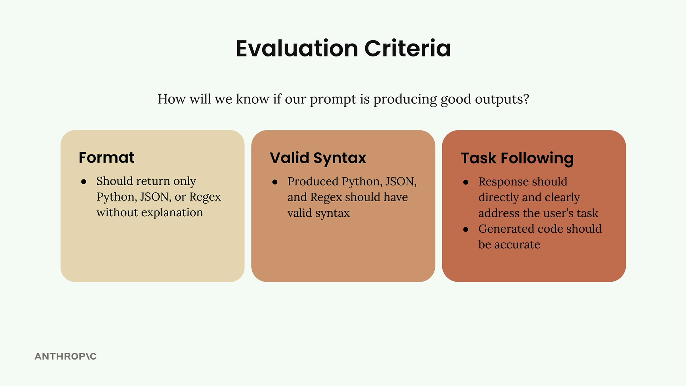
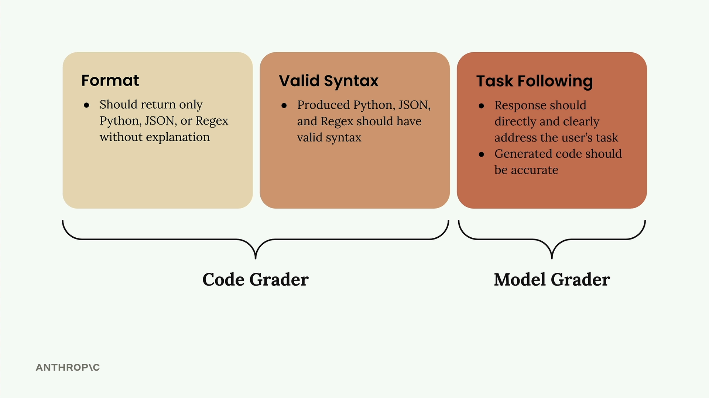

모델 기반 채점
프롬프트 평가 워크플로우를 구축할 때, 채점 시스템은 출력 품질에 대한 객관적인 신호를 제공합니다. 채점기는 모델 출력을 받아 측정 가능한 피드백을 반환합니다. 일반적으로 1에서 10 사이의 숫자로, 10은 높은 품질을, 1은 낮은 품질을 나타냅니다.
채점기의 종류

모델 출력을 채점하는 세 가지 주요 방법이 있습니다:
- 코드 채점기 - 사용자 정의 로직을 사용하여 출력을 프로그래밍 방식으로 평가
- 모델 채점기 - 다른 AI 모델을 사용하여 품질 평가
- 인간 채점기 - 사람이 직접 출력을 검토하고 점수 부여
코드 채점기
코드 채점기를 사용하면 원하는 모든 프로그래밍 방식의 검사를 구현할 수 있습니다. 일반적인 용도는 다음과 같습니다:
- 출력 길이 확인
- 출력에 특정 단어가 있는지/없는지 확인
- JSON, Python, 또는 정규식의 구문 유효성 검사
- 가독성 점수
유일한 요건은 코드가 사용 가능한 신호를 반환해야 한다는 것입니다. 일반적으로 1에서 10 사이의 숫자입니다.
모델 채점기
모델 채점기는 원본 출력을 다른 API 호출에 입력하여 평가합니다. 이 방식은 다음을 평가하는 데 뛰어난 유연성을 제공합니다:
- 응답 품질
- 지시 사항 준수 품질
- 완전성
- 유용성
- 안전성
인간 채점기
인간 채점기는 가장 높은 유연성을 제공하지만 시간이 많이 걸리고 번거롭습니다. 다음을 평가하는 데 유용합니다:
- 일반적인 응답 품질
- 포괄성
- 깊이
- 간결성
- 관련성
평가 기준 정의

채점기를 구현하기 전에 명확한 평가 기준이 필요합니다. 코드 생성 프롬프트의 경우 다음에 집중할 수 있습니다:
- 형식 - 설명 없이 Python, JSON, 또는 정규식만 반환해야 함
- 유효한 구문 - 생성된 코드는 유효한 구문을 가져야 함
- 과제 수행 - 응답은 정확한 코드로 사용자의 과제를 직접 다뤄야 함

처음 두 기준은 코드 채점기와 잘 맞는 반면, 과제 수행은 유연성 때문에 모델 채점기에 더 적합합니다.
모델 채점기 구현
모델 채점기 함수를 구축하는 방법은 다음과 같습니다:
def grade_by_model(test_case, output):
# Create evaluation prompt
eval_prompt = """
You are an expert code reviewer. Evaluate this AI-generated solution.
Task: {task}
Solution: {solution}
Provide your evaluation as a structured JSON object with:
- "strengths": An array of 1-3 key strengths
- "weaknesses": An array of 1-3 key areas for improvement
- "reasoning": A concise explanation of your assessment
- "score": A number between 1-10
"""
messages = []
add_user_message(messages, eval_prompt)
add_assistant_message(messages, "```json")
eval_text = chat(messages, stop_sequences=["```"])
return json.loads(eval_text)
핵심 통찰은 점수와 함께 강점, 약점, 그리고 추론을 요청하는 것입니다. 이 맥락 없이는 모델이 6 정도의 중간 점수를 기본값으로 선택하는 경향이 있습니다.
채점을 워크플로우에 통합하기
채점기를 호출하도록 테스트 케이스 실행기를 업데이트하세요:
def run_test_case(test_case):
output = run_prompt(test_case)
# Grade the output
model_grade = grade_by_model(test_case, output)
score = model_grade["score"]
reasoning = model_grade["reasoning"]
return {
"output": output,
"test_case": test_case,
"score": score,
"reasoning": reasoning
}
마지막으로, 모든 테스트 케이스에 걸쳐 평균 점수를 계산합니다:
from statistics import mean
def run_eval(dataset):
results = []
for test_case in dataset:
result = run_test_case(test_case)
results.append(result)
average_score = mean([result["score"] for result in results])
print(f"Average score: {average_score}")
return results
이를 통해 프롬프트를 반복 개선할 때 추적할 수 있는 객관적인 지표를 얻을 수 있습니다. 모델 채점기는 다소 변덕스러울 수 있지만, 개선 사항을 측정하기 위한 일관된 기준선을 제공합니다.